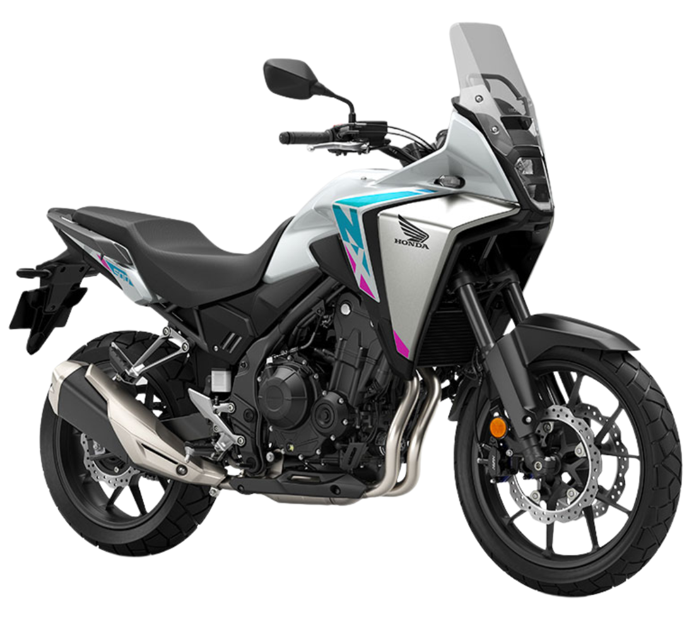
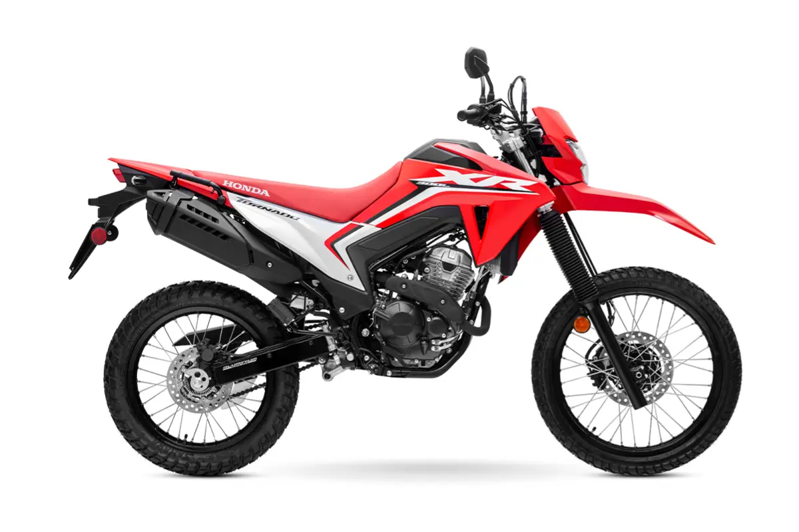
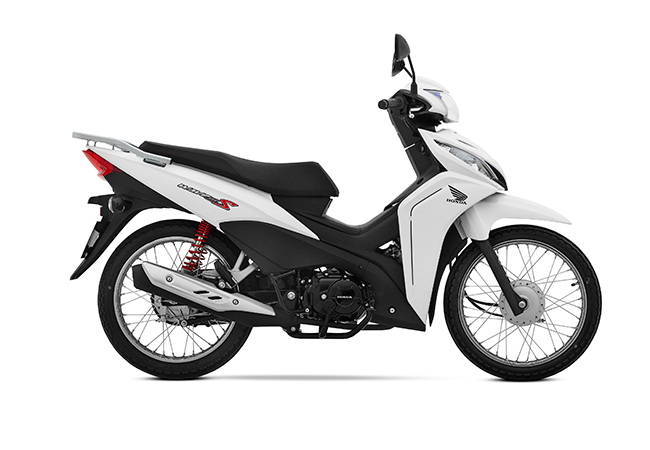

Honda CB750 Hornet "Moto estrella"
| Característica | Dato |
|---|---|
| Motor | Bicilíndrico en paralelo, 4 tiempos, OHC, refrigerado por líquido |
| Cilindrada | 755cc |
| Peso | 190 kg |
| Capacidad del tanque | 15,2 litros |
| Potencia máxima | 92 CV |
Conocé nuestra selección de motocicletas y descubrí las características de cada modelo.
| Característica | Dato |
|---|---|
| Motor | Bicilíndrico en paralelo, 4 tiempos, OHC, refrigerado por líquido |
| Cilindrada | 755cc |
| Peso | 190 kg |
| Capacidad del tanque | 15,2 litros |
| Potencia máxima | 92 CV |

| Característica | Dato |
|---|---|
| Motor | Bicilíndrico, 4 tiempos, 8 válvulas, DOHC, refrigerado por líquido |
| Cilindrada | 471cc |
| Peso | 196 kg |
| Capacidad del tanque | 17,5 litros |
| Potencia máxima | 47,5 CV |

| Característica | Dato |
|---|---|
| Motor | Monocilíndrico, 4 tiempos, 4 válvulas, OHC, refrigerado por aire y aceite |
| Cilindrada | 294cc |
| Peso | 153 kg |
| Capacidad del tanque | 13,8 litros |
| Potencia máxima | 24,3 CV |
| Característica | Dato |
|---|---|
| Motor | Monocilíndrico, 4 tiempos, 4 válvulas, OHC, refrigerado líquido |
| Cilindrada | 157cc |
| Peso | 131 kg |
| Capacidad del tanque | 8 litros |
| Potencia máxima | 15,8 CV |

| Característica | Dato |
|---|---|
| Motor | Monocilíndrico, 4 tiempos, 2 válvulas, OHC, refrigerado por aire |
| Cilindrada | 109,1cc |
| Peso | 102 kg |
| Capacidad del tanque | 3,7 litros |
| Potencia máxima | 9,3 CV |